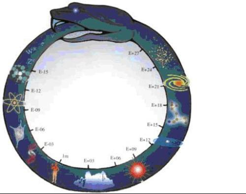
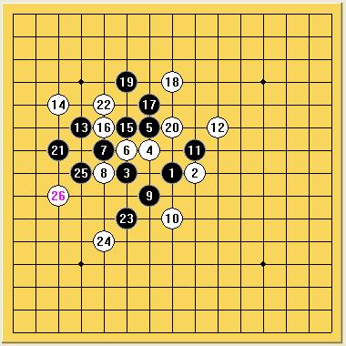

一条蛇咬自己的尾巴与弹簧杀（壁虎断尾）
#1 一条蛇咬自己的尾巴与弹簧杀（壁虎断尾） 作者：小天元子 发表时间：2009-6-20 10:42:55

这条蛇有点狰狞，在网上实在找不到更好的图片了，依稀记得初中物理课本上那条咬尾蛇还是蛮可爱的，好象是黄色的。物理学上的咬尾蛇寓意深远，貌似是霍金在《时间简史》第一章中给出的，它要表达的是物质世界从微观到宏观的统一，时间和速度的微妙关系等。在化学上，这个是苯环结构模型，科学家凯库勒发现这个蛇咬尾巴的模型还衍生出一段逸事。在哲学心理学上，蛇咬尾巴同样是一个很有指征意义的模型，有人说这是一种自我陶醉，有人说这可以表示人类历史没有起点也没有终点，还有人说这是表示生生灭灭，从未消失但存在形式在永久改变和重组的一个漫长过程，……诸如此类观点还有很多，吞咬自己的蛇本身就是一个矛盾统一。
在五子棋上这个模型同样具有指征意义，这是拆恒星过程中的一个感悟，因为过于抽象性，不妨当成小文章来看看。先来看一个例子，例子很简单
=======
上图对应的爱五子棋谱代码如下，以便你拆解：========
h8i8f8g9g10f9e9e8
======================================================
其中一路追胜走法

过程是很简单，但是这个图形因为好看呈四方形绕了一圈又回到起点，当时重新燃起我对全局性的五子棋以及过去对双杀的兴趣，便有了很多思考。关键词：闭合回路、蛇咬尾巴。
之后是关于这个型的思考
=======
上图对应的爱五子棋谱代码如下，以便你拆解：========
h8i9j8h7j9i8i7k9g9j6e9
======================================================
记得某位前辈曾经说过，如果你不知道怎么防守活3，那么只要堵活3发展方向那头一般情况下总是对的。这个9手勾起我对掉虎离山弹簧杀型的初步理解：壁虎断尾。
壁虎断尾与蛇咬尾巴不同，壁虎断尾是通过断尾后的一子之力在另一个战区厚势达到必胜，之后在另一个战区过程表现为蛇咬尾巴；蛇咬尾巴则是所有双杀的共同特点，可以以活3为切入点细细看这两个有趣现象。
继续拆恒星过程，发现这样利用活3的情况很多
[iwzq]h8i9j8h7j9
#2 Re:一条蛇咬自己的尾巴与弹簧杀（壁虎断尾） 作者：岳麓小棋皇 发表时间：2009-6-20 12:08:41
唉,难得楼主写了这么多,支持一下吧,都不容易.#3 Re:一条蛇咬自己的尾巴与弹簧杀（壁虎断尾） 作者：越狱行辕 发表时间：2009-6-20 12:27:19
挖哈哈 只看名 我就知道谁写的
就你写的我看不懂 名词太多
名词太多
#4 Re:一条蛇咬自己的尾巴与弹簧杀（壁虎断尾） 作者：wrwak 发表时间：2009-6-20 12:42:23
第二个相公诞生了，太长了，写起来浪费时间，看的人也累。#5 Re:一条蛇咬自己的尾巴与弹簧杀（壁虎断尾） 作者：lfzxdh 发表时间：2009-6-20 19:02:54
眼睛色弱。。。麻烦楼主改下颜色
#6 Re:一条蛇咬自己的尾巴与弹簧杀（壁虎断尾） 作者：小天元子 发表时间：2009-6-20 19:11:18
这条蛇有点狰狞，在网上实在找不到更好的图片了，依稀记得初中物理课本上那条咬尾蛇还是蛮可爱的，好象是黄色的。物理学上的咬尾蛇寓意深远，貌似是霍金在《时间简史》第一章中给出的，它要表达的是物质世界从微观到宏观的统一，时间和速度的微妙关系等。在化学上，这个是苯环结构模型，科学家凯库勒发现这个蛇咬尾巴的模型还衍生出一段逸事。在哲学心理学上，蛇咬尾巴同样是一个很有指征意义的模型，有人说这是一种自我陶醉，有人说这可以表示人类历史没有起点也没有终点，还有人说这是表示生生灭灭，从未消失但存在形式在永久改变和重组的一个漫长过程，……诸如此类观点还有很多，吞咬自己的蛇本身就是一个矛盾统一。
在五子棋上这个模型同样具有指征意义，这是拆恒星过程中的一个感悟，因为过于抽象性，不妨当成小文章来看看。先来看一个例子，例子很简单
=======上图对应的爱五子棋谱代码如下，以便你拆解：========
h8i8f8g9g10f9e9e8
======================================================
其中一路追胜走法
过程是很简单，但是这个图形因为好看呈四方形绕了一圈又回到起点，当时重新燃起我对全局性的五子棋以及过去对双杀的兴趣，便有了很多思考。关键词：闭合回路、蛇咬尾巴。
之后是关于这个型的思考
=======上图对应的爱五子棋谱代码如下，以便你拆解：========
h8i9j8h7j9i8i7k9g9j6e9
======================================================
记得某位前辈曾经说过，如果你不知道怎么防守活3，那么只要堵活3发展方向那头一般情况下总是对的。这个9手勾起我对掉虎离山弹簧杀型的初步理解：壁虎断尾。
壁虎断尾与蛇咬尾巴不同，壁虎断尾是通过断尾后的一子之力在另一个战区厚势达到必胜，之后在另一个战区过程表现为蛇咬尾巴；蛇咬尾巴则是所有双杀的共同特点，可以以活3为切入点细细看这两个有趣现象。
继续拆恒星过程，发现这样利用活3的情况很多
=======上图对应的爱五子棋谱代码如下，以便你拆解：========
h8i9j8h7j9k8i7j6k9l10f8g8j10j12f9
======================================================
#7 Re:一条蛇咬自己的尾巴与弹簧杀（壁虎断尾） 作者：lfzxdh 发表时间：2009-6-20 20:03:26
还是觉得有点长，
最后一幅图就够啦
#8 Re:Re:一条蛇咬自己的尾巴与弹簧杀（壁虎断尾） 作者：小天元子 发表时间：2009-6-20 23:17:59
#9 Re:一条蛇咬自己的尾巴与弹簧杀（壁虎断尾） 作者：我爱丁丁 发表时间：2009-6-25 14:16:01
Nice theory#10 Re:一条蛇咬自己的尾巴与弹簧杀（壁虎断尾） 作者：南京小飞机 发表时间：2009-6-27 20:29:32
天元子说，小天元子呀，下山不能滋事，山下的人是老虎。
#11 Re:一条蛇咬自己的尾巴与弹簧杀（壁虎断尾） 作者：小天元子 发表时间：2009-6-27 20:32:50
去年今日此坛中 人面桃花相映红 人面不知何处去 终结依旧笑连珠#12 Re:一条蛇咬自己的尾巴与弹簧杀（壁虎断尾） 作者：小天元子 发表时间：2009-10-27 17:20:35
帖子坏了这么多，这个帖子后面部分也没了
#13 Re:一条蛇咬自己的尾巴与弹簧杀（壁虎断尾） 作者：裁决殿雪月 发表时间：2009-10-27 18:00:37
我文化底 看不懂哟